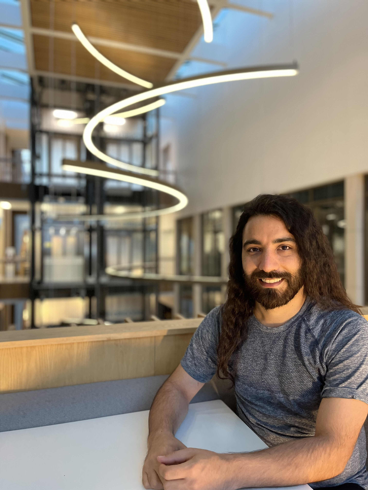

Amir Rahmani
I'm Amir, a Postdoctoral Research Associate in the Department of Chemical Engineering and Biotechnology at the University of Cambridge, currently working in Prof. Clemens Kaminski's group in collaboration with the British Antarctic Survey on a UKRI-funded project. My research sits at the intersection of physics, biology, and engineering. I develop advanced super-resolution microscopy tools to study nanoscale cellular behaviour at sub-zero temperatures. I hold a PhD in Physics from the University of Leeds, where I developed the first single-molecule flow cytometry system for applications in adaptive immunotherapy. Prior to my doctoral studies, I trained at world-leading institutes including EMBL Heidelberg and ICFO Barcelona, shaping my passion for cutting-edge imaging science. Beyond research, I enjoy mentoring students, teaching, and engaging with the broader scientific community through conferences and collaborative initiatives.
Outside of the lab, I have a passion for both physical and mental challenges. I train in Kickboxing and Taekwondo, and enjoy staying active through running and football. For a more relaxed but equally competitive fix, you'll often find me at the Ping Pong table or locked in a strategic battle over Chess or Backgammon.
Career Journey
In collaboration with the British Antarctic Survey
Thesis: Single-molecule imaging flow cytometry
Research Highlights
See all →